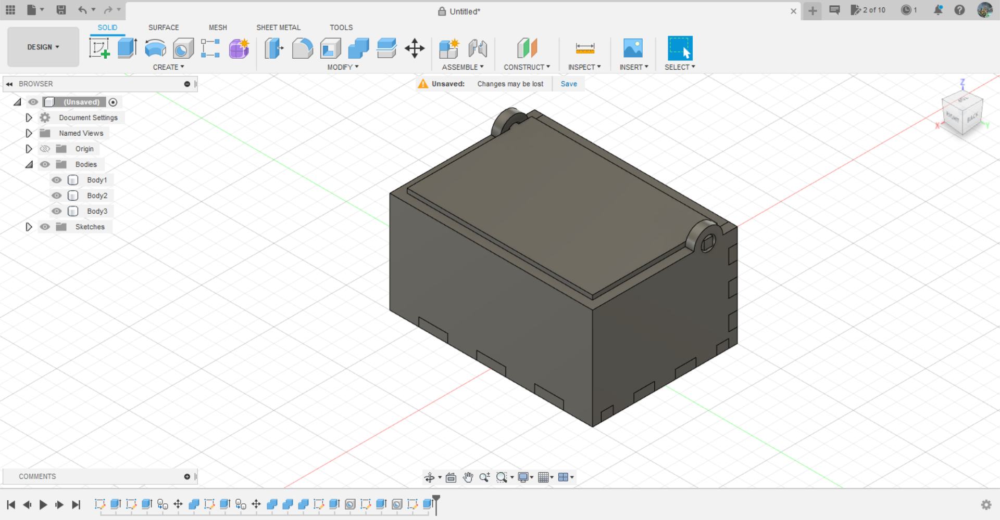

Making a Music Box for my Dad's Birthday
I have decided to make a Music Box for my dad's Birthday. There are two very important part to make a music box. The Music Box's internals and the Box itself. My Teacher will be passing us the Music Box internals so the only thing I have to do is to make the music Box. These are software and materials I used:
- Fusion 360 - To Desgin the Music Box
- Inkscape - To help layout the Design for Laser Cutting and creating the Penguin Vector
- CorelDRAW - Used to prep the SVG file for laser Cutting
- 3mm thick wood
PHASE 1. Using Fusion 360 to make the Box
My Dad likes a minimalist design. He doesn't like his gifts to be too complex and expensive, so I design the Music Box to be as simple as possible. Based on what I have learnt, to create each side I would have to manually create each side and input the lenght height and breath. However, after I was showed how to use the "Change Parameters" tab, I was able to input my ideal length, width, height and thickness for the Box. This makes the entire the design process mcuh more easier and faster by ten folds. I no longer have to keep track of the numbers I want to use and change each of them when i feel it is too big or small. I could just input the name of the Parameter, and if I ever felt that maybe the box was too small or too big, I can just change the Parameter and everything labeled under it would change as well.
In addition to this, I made 3 additional parameters, these are "Nlen", "Nwid" and "Nheight". This is for the amount of "teeth" I want to make per side. This is because in order to attach the two sides and make it flush in appearance, I would have to glue them together and the "teeth" would help with that. On hindsight I should have renamed "Nheight" to something like "Nhei"
After making one side, I would use the copy and paste option as it is faster than making another side and painfully redrawing all the teeth. Once both side is created Fusion recognize my product as one solid object, to change this I will use the "Combine" feature to split the entire product into 3 seperate bodies. I will repeat this step one more time for the abother sides and in a new record time, I have successfully created a box in Fusion 360
I added on a lid to cover everything and to make it able to move, I made two additonal holes along the sides of the lid where I want it to open. The inner diameter of the hole is larger than the thickness of the wood. This is the final product.
This is still only Phase 1. In the next Phase I will be converting the 3D drawings into 2D ones and importing them into Inkscape where I will add my penguin vector and message along with prepping the file to be laser cut.